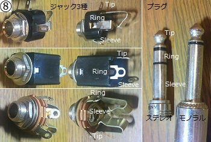
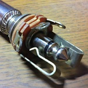
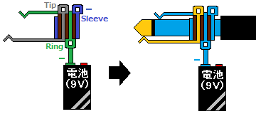
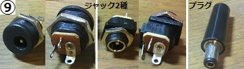
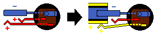
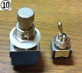
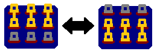
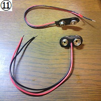
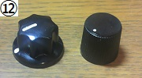
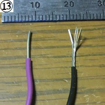

私のエフェクター自作方法【部品編2】ジャック・スイッチ他
2008年11月20日 カテゴリー：私のエフェクター自作方法

[8]入力（インプット）ジャック・出力（アウトプット）ジャック
通常エフェクターでは入力に6.35mm（1/4インチ）ステレオフォンジャック、出力にモノラルフォンジャックを使います。取り付けネジ部分がプラスチック製（絶縁型）と金属製のものがありますが、エフェクターでは金属製のものでOKです。
ステレオジャック・プラグは3系統の信号があり、Tip（チップ、先の部分）、Ring（リング、輪になった部分）、Sleeve（スリーブ、根本の部分、アースにつなぐ）となります。ジャックによって端子の出方が違います（上写真）。よく見て（あるいはテスターで）どことどこがつながっているか確認しておきます。モノラルだとリングが無くて2系統になります。
エフェクターではインプットジャックにプラグを差し込むと電源オンとなるものが多いです。これはステレオジャックにモノラルプラグを差し込んだ場合に、ステレオジャックのリングに当たる部分がスリーブとつながることを利用しています（下写真・図）。
 
具体的にはリングの端子に電池スナップのマイナスをつなげておいて、プラグをさした時だけ電池のマイナスがアースとつながるという具合です。【6】配線（ケース編）も合わせてご覧ください。
※スイッチ付きフォンジャックというのもありますが、特に指定がない限り使いません。

[9]DCジャック
よく普及している内径2.1mm、外径5.5mmのものを使います。エフェクター界ではセンターマイナス（プラグの凹んでいる方がマイナス）が主流だと思います。上写真の2種類のタイプを使っておけば問題ありません（右のタイプは割高なのですが、ケースの内側から取り付けできるし、小型なので便利です）。※センターマイナスの場合、取り付けネジの部分が金属になっているタイプは使えません。
2系統の信号、プラス電源とマイナス（アース）を扱いますが、ジャックは3つの端子が出ています。プラグを差し込むと離れる端子があり、DCプラグを差し込んだ際に電池からの電力供給が止まるようになっています（下図参照）。【6】配線（ケース編）も合わせてご覧ください。


[10]スイッチ
エフェクトのオン・オフ切り替えは9ピンがついているフットスイッチを使います（3PDTという表記）。図に描くほどではありませんが、スイッチを押すごとに内部結線が切り替わります（下図）。

バイパス方法を変えればDPDT等他のスイッチも使えますが、値段や入手しやすさも良くなっているので3PDTスイッチを使ってトゥルーバイパス配線をするのが簡単だと思います。
※「モーメンタリー」と書いてあるスイッチは押している間しか切り替えられないので通常は使いません。
トグルスイッチも基本は上図のような切り替えとなりますが、特殊な結線のスイッチもあります。購入の際には注意が必要です。

[11]電池スナップ
縦型（Iタイプ、写真上）と横型（Tタイプ、写真下）がありますが、縦型だとMXRサイズ等の小さなケースでは電池が入りません。また、電池を取り付ける部分がプラスチック製のものはやはり小さなケースには入りづらいです。ナイロン製の縦型を選ぶのが無難だと思います。

[12]ノブ（つまみ）
ポットに取り付けるつまみです。ポットのシャフトはソリッドシャフト（ギザギザがついていないシャフト）やスプリットシャフト（ギザギザがついているシャフト）があり、さらにそれぞれミリ規格（6mm）とインチ規格（1/4インチ=6.35mm）があります。6mmシャフトを1/4インチシャフトへ変換するBRASS SLEEVE FOR POTというパーツもあります。1/4インチソリッドシャフト用のノブなら全てのポット（特殊なシャフト以外）に使えます。

[13]配線材
エフェクターの内部配線では普通22AWG～24AWG（外径1.5mm）ぐらいのものを使います。線材の種類は単線（写真左）と撚線（写真右）とがあり、単線は太い1本の針金のような線材、撚線は細い線を撚り集めてできた線材です。撚線の方が曲がりやすいですが、柔らか過ぎても使いにくい場合もあるので、好みで選んで問題ないと思います。